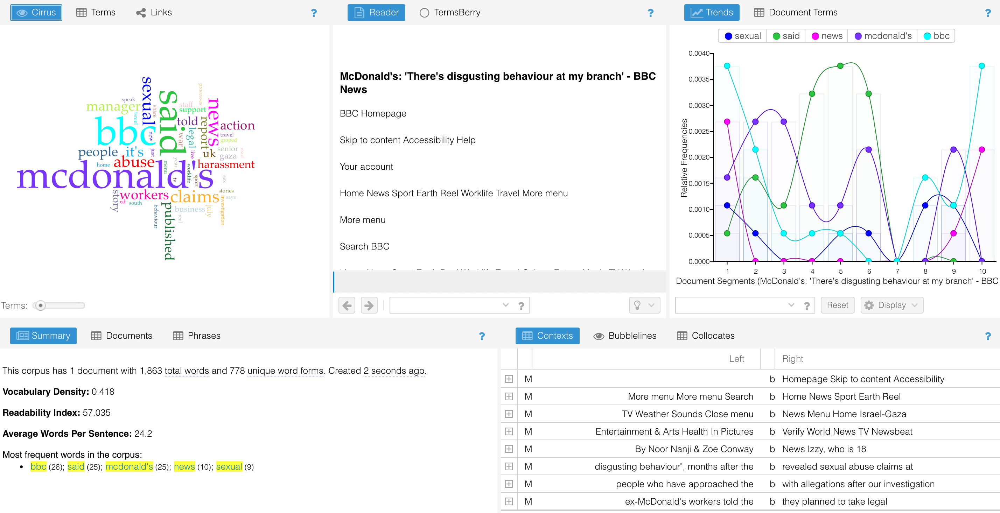
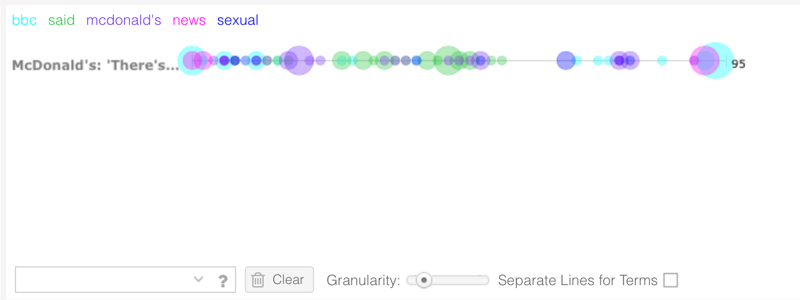

I want to create a website about the impact of Fake News and its real-life consequences. Essentially, I envision a website organized into sections, like the format of the 7 Deadly Sins website we discussed in Week 3. I want my website to consist of extensive information with regards to the most notorious fake news stories out there, as well as tips on how to spot fake news.
I read through and considered the 14 professional writing characteristics. I decided to evaluate the BBC New's website. BBC News
| Accuracy: Is the text accurate, authoritative and any arguments backed by evidence? |
Yes, it is an official news site that strives for accurate, impartial and independent journalism. There is a lot of information provided on their website about where they get their information from and the policies they adhere to, in order to keep the information accurate. It is authoritative as it has a long-standing reputation for reliable and factual reporting. It also adheres to journalistic standards. Where evidence is needed to back up an article, it is provided. |
|---|---|
| Active voice:Is it used correctly or excessively? | The active voice is used correctly in their website and articles. They make use of it in a way that engages their audience and creates a sense of directness. This makes the website come across as professional. |
| Bias: Are any biases and stereotypes evident in the text? |
There are not any negative biases on the website. The only form of bias that is present, is the trending news topics of a certain time being pushed to the top of the homepage. There are not any stereotypes present on the website or in the articles. |
| Clarity Is there jargon and is the technical terminology defined? |
There is no jargon and when necessary, there are explanations of certain technical terminology used. |
| Conciseness Is the text very wordy? |
The website homepage is not overly wordy, but it is a news website. Therefore in relation to the website’s purpose, the website would not be seen as overly wordy. |
| Conversational + Smooth Flow:
Is the language simple, conversational and makes use of contractions? |
All the language used on the website and in the articles is simple, makes use of contractions when needed and has a conversational feel to it. |
| Correctness: Is the grammar and word usage correct? |
All of the grammar and word usage is correct, which gives them a professional reputation |
| Parallelism: Is there a use of parallelism in the text? |
Yes there is, all the sentences are punchy and to the point. This is done to increase engagement and to have clear structure. |
|---|---|
| Positive Voice: Does the text always present itself in positive voice? | The news articles themselves are not always in positive voice, which makes sense for a news reporting website. They need to report in a realistic manner and in real life situations, not everything is going to be positive. All of these decisions are taken into careful consideration and the website does not appear negative in any way. |
| Strong Nouns and Verbs:
Are the verbs and nouns strong in the text and is there an overuse of them? |
Yes there is an effective use of verbs and nouns. There is no over usage as they adhere to very strict standards of writing. All of their journalists are highly qualified, meaning all articles on their website will be expertly constructed. |
| Sentence Variety:
Do the sentences appear similar in words used as well as length? |
There is not a similarity in the way sentences start, as this repetition could become distracting. All of the sentence lengths differ slightly from each other. |
| Simple Words:
Is the language used in the text understandable and well-recognised? |
Yes all of the language used throughout the website and within the articles is understandable and well-recognised. |
| Shorter Paragraphs:
Are the paragraphs too long? |
No , the paragraphs are very short and broken up. In academic terms, this would not be appropriate. But in news reporting terms, this is standard procedure. |
| Tone and Voice:
Is the tone of the text appropriate? |
Yes the tone and voice is appropriate and is consistent throughout all of the website and articles. There is a professional, direct tone without it feeling too formal. The tone can be classified as an informative tone. |
I think that I have defined my audience quite well, I did an in-depth analysis of more than one persona and I believe that if my website reaches my audience, they will benefit greatly from being exposed to it. I also believe my audience choice, being students, was an appropriate choice in relation to the awareness of fake news and its real-life consequences. I think that in this audience group, students are making use of social media a lot and are so absorbed in their online world that they may not fully be aware of how the online world affects the real world, in a positive or negative way. I also think that the design inspiration from the 7 Deadly Digital Sins website would appeal to this audience, with it being interactive and fun. I’ve defined my purpose quite well in the previous tasks too, which is to inform my audience of the real-life consequences that fake news can cause. I want it to be crystal clear that interacting and/or sharing fake news is seriously harmful to society, which is why I want to show examples to really let it sink in. When it comes to conducting research, I think that there can be more improvement in this area, I tend to be worrying more about building the website at this point instead of deciding what my fake news stories are going to be, this is something I have identified so far and am working on. Conducting research is probably the most important phase for me when building this type of website, so I am aware I need to do a lot more research into trustworthy sources for the time being. The organisation of work has been fine, I have been updating my HTML document with all my recent lab work, and have folders to keep my information for this project. I have also succeeded in the outline and categorization of tasks.
I used Voyant to analyze an article written by BBC News, I chose it to analyze an article instead of the whole website as I wanted to learn how to effectively report on an event that keeps my audience engaged and informed. I learned some interesting things which are discussed below. I have attached two screenshots of the results I got.
This is the article that I made use of :
BBC News
These were the results:


Most Frequent Words in the corpus:
bbc (26); said (25); mcdonald's (25); news (10); sexual (9)
This article is obviously written by the BBC about McDonald’s which involves sexual abuse or harassment. There are clearly a lot of first-hand accounts with the word ‘said’ appearing a lot. This can be confirmed by reading the abstract of the article which states: “Izzy, who is 18 and works at McDonald's, says she is still witnessing "disgusting behaviour", months after the BBC revealed sexual abuse claims at the fast food chain.”
‘BBC’ seems to be the most frequently used word, however, it is clear that Voyant analyzed the whole webpage instead of the article alone. Therefore, there may not be a fully accurate result of what the most frequent word was in the article itself. BBC appeared to be used most at the beginning of the document and at the end, which would be a result of introducing the investigation, which was carried out by BBC and closing the article giving their opinion on the investigation. The second most frequent word was ‘said’, which made it clear that the article relies heavily on first-hand accounts which is important when publishing an article of this nature. It gives credibility to the article and the claims are backed up with evidence of real experiences. ‘Said’ appeared most in the middle of the article, which is in the main body, where the nitty-gritty detail is usually expanded on. The third most frequent word was ‘McDonald’s’, which is important as it reminds readers who the article is being written about. ‘Mc Donald’s appeared most at the start of the article and was mentioned at a low frequency throughout the whole article.
I found this article and Voyant Tool application helpful because it gave a clear indication of how to structure an article - which words should come first according to their meaning and importance for the article. It also gave me a clear indication of the tone I should embody in my website’s copy.
Fake News Story: South African Alcohol Ban hoax
All information taken from : BBC News
Opening Statement:
Picture this: You wake up one morning, grab your phone and scroll through your social media feed only to find a shocking headline - “South Africa Implements Nationwide Alcohol Ban!” Panic sets in as you envision the consequences, but what if I told you that this headline was not just misleading but entirely false?
Contextualisation:
In the digital age, fake news can appear in any form. In this case it was a voicenote that got circulated around the country, claiming that there was going to be an alcohol ban reinstated and that everyone should go and stockpile alcohol. This voicenote created panic and real-world consequences, illustrating how fake news can rapidly influence an entire community in such a deceitful manner.
Key Argument and Impact:
Media literacy is not just a skill, it's a shield against deception. If you equip yourself with the tools to identify and combat fake news, you can protect your community from the negative effects. The South African ‘alcohol ban’ saga is just one example of how easily rumours can spread, causing unwarranted fear and confusion. This fake news story relied heavily on sensationalism and was an effort to boost alcohol sales by making this false claim of an alcohol ban.
Conclusion:
As we conclude our analysis of the South African alcohol ban fake news story, remember that your ability to recognize and debunk misinformation is a powerful force for good. The consequences of misinformation are real, but so is our capacity to combat it.
Reflection on Sample Text:
The examples provided suit my audience profile as they focus on engagement. This is displayed by the use of imagining a situation - “Picture this”. It also refers to the readers by using words like “you”. It is relevant to the audience’s social media usage as this fake news saga was executed via a voice note. Voice notes are sent through social media platforms, and the forward function allows for a rapid spread of information. Many students send and receive voice notes daily and might not be aware that fake news exists in this realm, too. The fake news story relies heavily on sensationalism, teaching the students a lesson about questioning stories that sound out of the ordinary. There is also a focus on not making the content too heavy or wordy, which could lose their attention span. When testing the samples of text against the professional writing characteristics, it performed well. There was accuracy because it was based on a published article by a trusted news organisation. It was written in an active voice. There was no bias, and clarity and conciseness were present throughout the text. It flowed smoothly, the grammar was correct, parallelism was present, and although it was a serious topic, I still kept a positive voice in order to empower the students. It had strong nouns and verbs, sentence variety was present, and all of the words were recognisable and not too complex. Lastly, the paragraphs weren’t too long, and the tone and voice were appropriate for the target audience and topic.